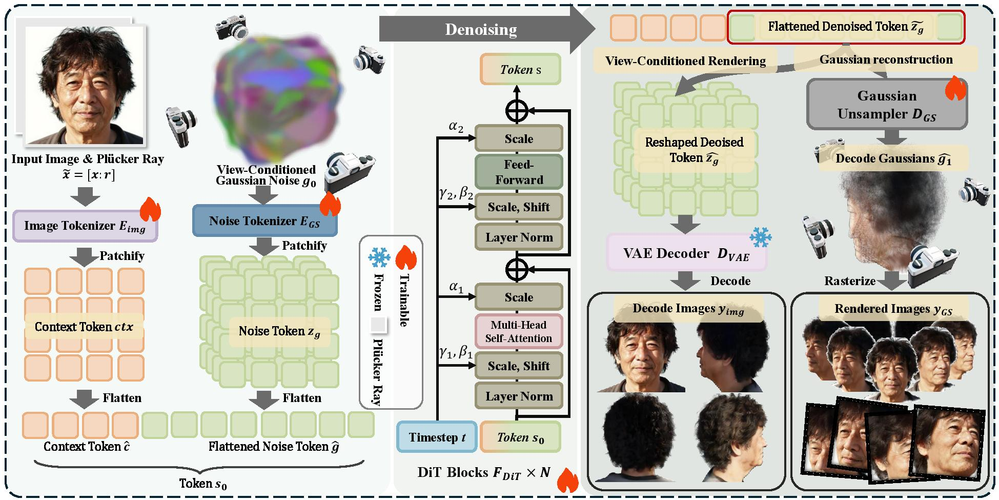

Any3DAvatar: Fast and High-Quality Full-Head 3D Avatar Generation from Any Single Portrait Image
Abstract
Full 3D head reconstruction from a single image is critical for virtual reality, augmented reality, video games, and teleconferencing. Existing methods typically face a strong quality-efficiency trade-off: achieving high-fidelity results often requires complex multi-stage pipelines and heavy per-subject optimization, while faster feed-forward designs usually sacrifice geometric accuracy and fine appearance details. As a result, prior approaches can rarely deliver high generation quality and high efficiency at the same time. To address these challenges, we propose Any3DAvatar, a fast and high-quality single-image 3D Gaussian head avatar generation method. Our fastest reconstruction takes less than one second while preserving high-fidelity geometry and appearance details. (1) We design a feed-forward denoising network that directly decodes a 3D Gaussian point cloud from noisy tokens augmented with spatial positional information, enabling one-step reconstruction without sacrificing quality. (2) We adopt a multi-task learning scheme that optimizes geometry and appearance together, improving reconstruction accuracy and rendering quality. (3) We carefully construct a more diverse training dataset to mitigate selection bias and enhance fine-detail reconstruction across a wider range of subjects and conditions, and we split a subset from this dataset to build a small benchmark for evaluating full-head generation quality. Extensive experiments show that Any3DAvatar achieves superior rendering quality while maintaining fast inference, significantly outperforming prior 3D Gaussian-based head reconstruction methods.
Method

Pipeline of Any3DAvatar. Given a single portrait, we extract image tokens and Gaussian tokens, jointly denoise them with a DiT backbone, and decode the denoised tokens into both multi-view images and 3D Gaussian point clouds; during training, we further apply a multi-task objective combining reconstruction and perceptual supervision, while inference uses a single-step feed-forward generation path.
Results
Single Image to 3D Head
Any3DAvayar lifts a single facial image to a detailed 3D reconstruction with preserved identity features.